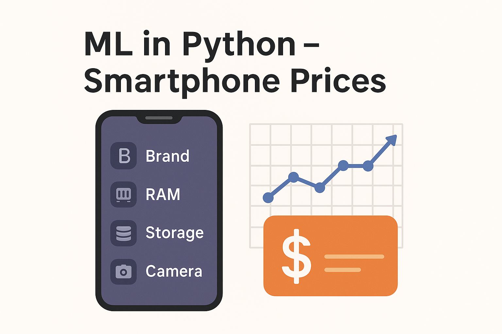

March 27, 2025
UK-EU trade through Gravity Model
This project explores UK-EU trade relations through the lens of the Gravity Model of Trade, analyzing how factors like economic size, distance, and Brexit affected bilateral trade flows.
The study incorporates historical trade trends and recent shifts in trade dynamics post-Brexit to evaluate the changing structure of UK-EU economic ties.
December 30, 2024
Machine Learning for Smartphone Price Prediction in Python

Analysis of smartphone price determinants using a dataset of 1,200+ devices. After cleaning and transforming data (handling missing values, log-transforming prices, and encoding brands), exploratory analysis revealed correlations between price, RAM, storage, and display size. A decision tree regression model outperformed linear, lasso, and ridge models, achieving the highest accuracy (R²=0.77) in predicting prices.
May 21, 2024
Machine Learning for Camera Prices in R
These files present a statistical analysis of camera data, focusing on variables such as price, megapixels, weight, and brand (Canon vs. Nikon). The analysis includes normality testing (rejecting normality for most variables), linear regression modeling to predict price, and model comparisons using adjusted R-squared and residual diagnostics. The final model (m3) incorporating megapixels, weight, and score showed improved explanatory power, though residual plots indicated potential non-linearities, suggesting limitations in linear assumptions for prediction accuracy.
April 25, 2024
Security Services Market Structure in Pakistan
This report analyzes Pakistan's evolving security landscape, examining the interplay between public policing challenges and the expanding private security sector. It highlights rising crime rates, economic pressures, and the critical role of public-private partnerships in addressing security gaps through modernization, regulatory reforms, and tailored services. The study underscores the need for strategic investments and collaboration to enhance national safety and economic confidence.
December 10, 2023
Highnoon Financial Analysis
This financial analysis report evaluates Highnoon Laboratories Limited (2018–2022), focusing on capital structure trends, dividend policies, and key financial metrics. It highlights a strategic shift toward equity financing and reduced long-term debt, alongside fluctuating dividend payouts linked to earnings growth and expansion initiatives. The study notes consistent bonus dividends, operational efficiencies, and comparisons with industry peers, emphasizing Highnoon’s prudent financial management amid market opportunities and economic challenges.